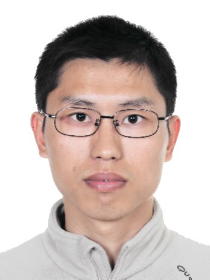

|  |
办公室：理学楼354
邮箱: xinghong_87@nuaa.edu.cn
[我的简历] [Google Scholar] [GitHub][English Page]
潘星宏，专聘副研究员。2010年9月至2017年3月硕博连读于南京大学数学系，师从南京大学尹会成教授，取得理学博士学位。2013年1月至3月作为访问学生访问加州大学河滨分校数学系，、 访问老师为张旗教授。2014年12月至2016年12月赴加州大学河滨分校进行为期两年博士联合培养项目，联合培养导师为张旗教授。 现为南京航空航天大学专聘副研究员，入选2018年江苏省“双创博士”人才计划。主要研究方向为Navier-Stokes方程解的正则性和唯一性问题， 受到江苏省自然科学基金青年基金和国家自然科学基金青年基金资助。目前，在 Arch. Ration. Mech. Anal.，J. Funct. Anal., J. Differential Equations, J. Math. Phys.，Calc. Var. Partial Differential Equations，Commun. Contemp. Math., Discrete Contin. Dyn. Syst., J. Math. Fluid. Mech., 等杂志发表多篇SCI论文。
2010.09-2017.03，南京大学，理学博士；
2006.09-2010.06，南京大学，学士。
2022.1 - 至今，南京航空航天大学，数学学院，专聘副研究员，在职；
2017.4 - 2021.12，南京航空航天大学，理学院，讲师；
2014.12 - 2016.12，美国加州大学河滨分校，数学系，联合培养博士；
2013.1 - 2013.3，美国加州大学河滨分校，数学系，访问学者。
具轴对称Navier-Stokes方程解的性态研究，国家青年科学基金项目，2019.01-2021.12，主持；
轴对称Navier-Stokes方程D解衰减性和消失性研究，省自然科学基金青年基金，2018.07-2021.06，主持；
高雷诺数及宏观微观流体力学方程的数学理论，国家自然科学基金重点项目，2021.01-2025.12，参与；
江苏省双创计划，双创博士，省中组部，2019.01-2020.12；
Li, Zijin; Pan, Xinghong; One component regularity criteria for the axially symmetric MHD-Boussinesq system. Discrete Contin. Dyn. Syst. 42 (2022), no. 5, 2333–2353 [PDF]
Li, Zijin; Pan, Xinghong; A single-component BKM-type regularity criterion for the inviscid axially symmetric Hall-MHD system. J. Math. Fluid Mech. 24 (2022), no. 1, Paper No. 16, 19 pp. [PDF]
Dong, Hongjie; Pan, Xinghong; On conormal derivative problem for parabolic equations with Dini mean oscillation coefficients. Discrete Contin. Dyn. Syst. 41 (2021), no. 10, 4567–4592. [PDF]